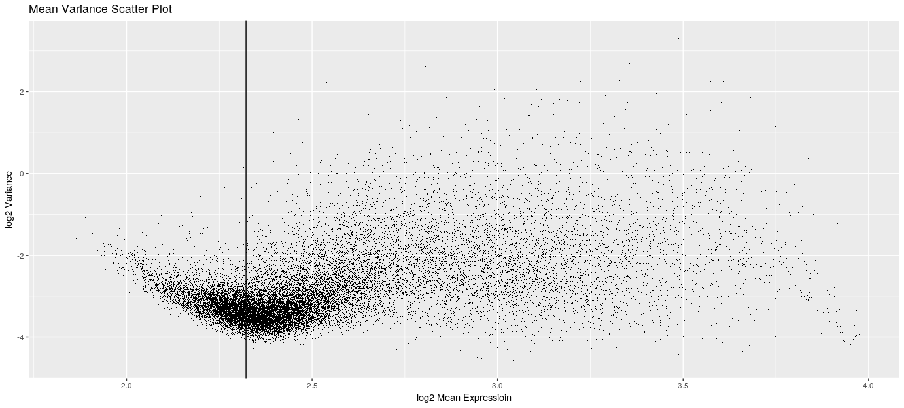

I begin by filtering the microarray data based on mean expression. There is a risk when analysing microarray data that transcripts with low expression levels have a higher tendency to contribute noise rather than valid biological signal. Figure 4 below shows the relationship between log2 mean transcript expression on the X axis against log2 transcript variance on the y axis for the 47,323 genes in the dataset. The vertical line indicates a mean transcript expression of 5. The initial trend we see is that the transcript variance decreases as mean expression increases up until the threshold of 5.
This indicates there is higher variability in the transcript results and potentially greater uncertanty, for genes that had lower expression levels. Excluding transcripts from down stream analysis whos mean expression was below the threshold reduces the chance that patients will be clustered based on erroneous transcripts whos variance was a product of low expression rather than biology.
The cutoff of a mean expression of 5 was chosen based on domain knowledge and appears coherent with the trend seen in the Figure 4.
Additionally excluding genes with lower mean expression will mean an increased ability to detect differentially expressed genes when using a Semi-Supervised approach becuase of the reduced number of tests that need to be adjusted for in multiple test correction.
Following this procedure 35,970 genes remained for analysis.

K-Means Clustering
In the fully unsupervised stream I have used the K-means clustering algorithm to find the optimal cluster assignment for each patient based on the full 35,970 transcripts.
Healthy control cases have been removed in the fully unsupervised stream since they were included in order to establish the list of differentially expressed genes between health and disease. As I am clustering based on all transcripts there is no need to select differentially expressed genes and hence I can remove the controls leaving 239 patients in the sample.
I have chosen to use the Euclidian distance metric, defined in Figure XYZ below, to represent the (dis)similarity between pairs of observations x and y.
The basic intuition of the K-means algorithm is to define clusters so that the within cluster variation is minimized. The within cluster variation is defined as the sum of squared Euclidian distances between items and the centroid to which they have been assigned:
where:
- xi is a data point belonging to the cluster Ck
- μk is the mean value of the points assigned to the cluster C
Each observation xi is assigned to a given cluster so that the sum of squared distances between the observation and their assigned cluster centers μk is minimized.
By summing over all the K clusters we compute the total sum squares.
Optimal Number of Clusters
The K-means algorithm requires that the number of clusters be predetermined by the user. Three different statistical methods for selecting the optimal number of clusters are shown in Figure XYZ below. Figure .1 shows the total within sum of squares computed for incrementing numbers of clusters. Visual inspection of the graph can then be used to identify an inflection point beyond which increasing the number of clusters provides only a marginal decrease in the total sum of squares. Figure .2 shows the optimal number of clusters as computed by the Average Silhouette score. The Silhouette score determines how well a data point suited to its cluster with higher values indicating a better cluster cohesion. Taking the average over all data points gives the Average Silhouette score which is maximised at 2 clusters in this case. Figure .3 shows the optimal number of clusters as computed using the gap statistic as described by R. Tibshirani, G. Walther, and T. Hastie in 2001. The gap statistic compares total within cluster variation for different values of k with their expected value under a null reference distribution. The null reference distirbution is generated by Monte Carlo simulation by generating B coppies of the reference dataset and computing the total within cluster variation. The gap statistic measres the deviation between the observed total within cluster variation and that expected under the null hypothesis. The optimal number of clusters is the value that maximises the gap statistic. The greatest reduction in variance occurs when the patients are partitoned into 2 clusters and this is also the optimal number as suggested using the average silhouette method. However the gap statistic suggests 4 clusters is optimal and this appears to be supported in Figure .1. Therefore we will examine the clinical data following clustering with k=2 and k=4.